Архив дизайна персонажа на aogl.cn: ортографический turnaround (спереди / слева / сзади / справа), листы character0–6, полоса walk1–9, встроенная демонстрация walk.html, ролики MP4 и два генеративных опорных кадра в одной папке.
Четырёхсторонний turnaround
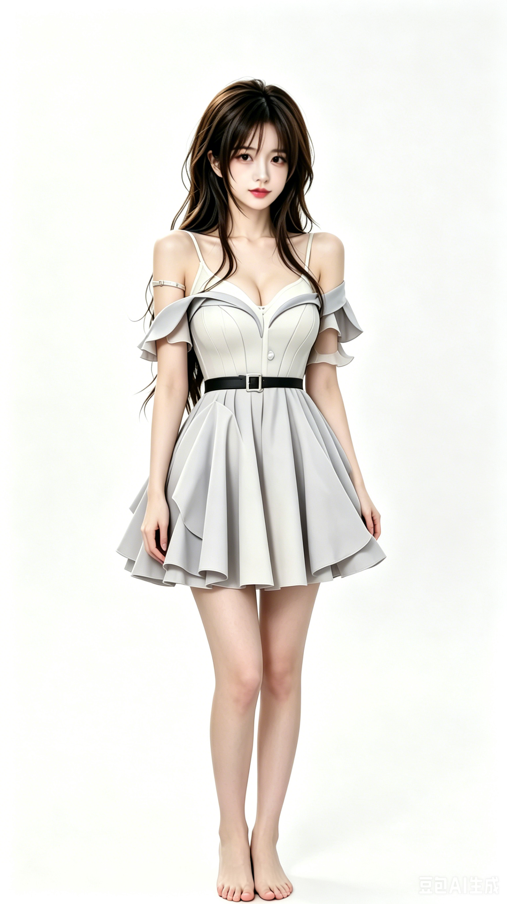
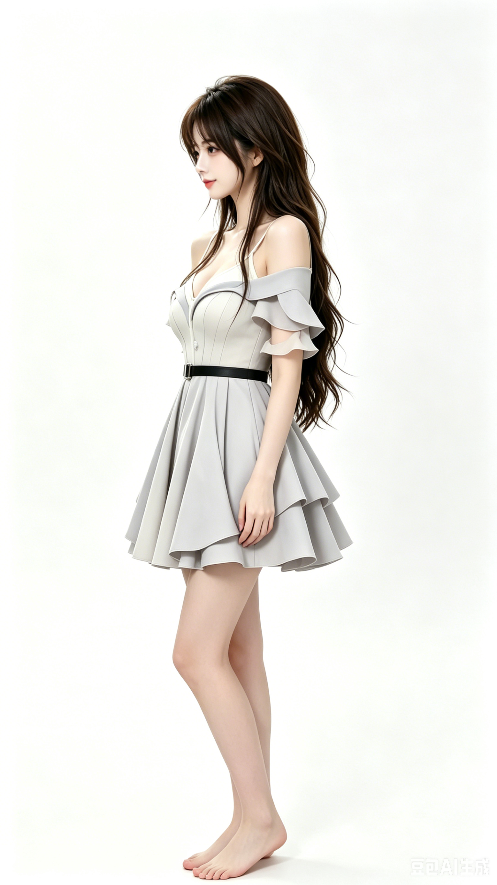
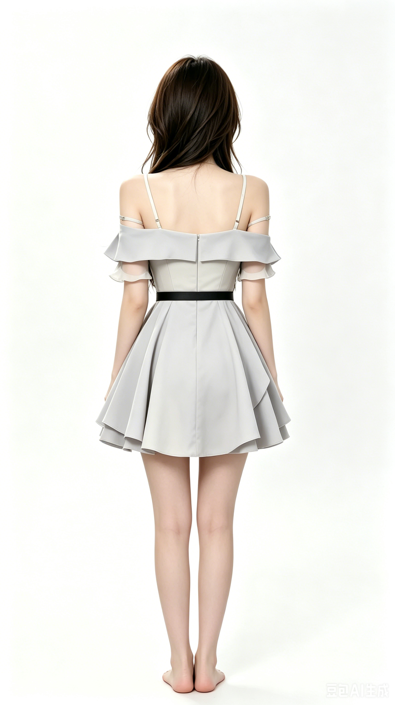
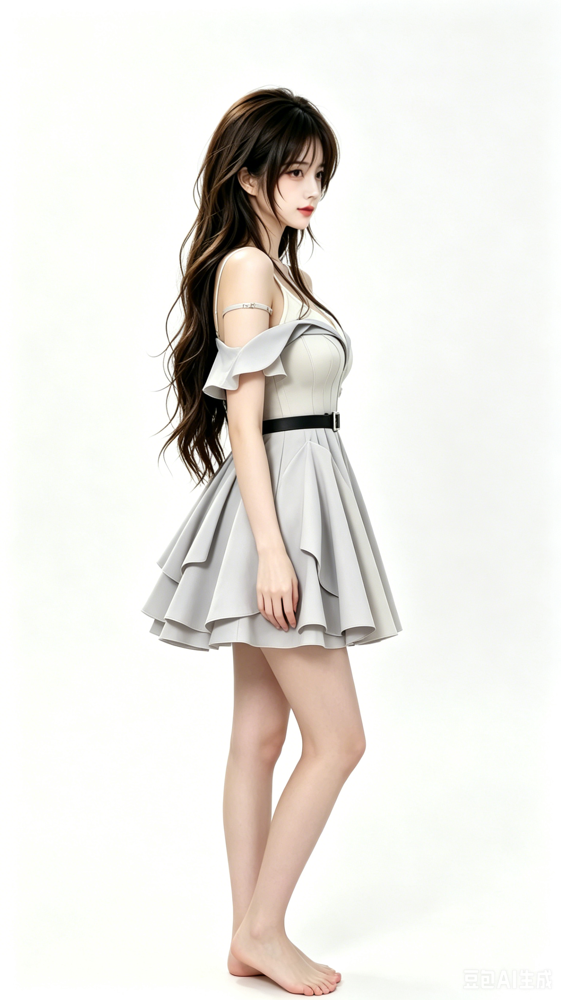
Листы character0–6
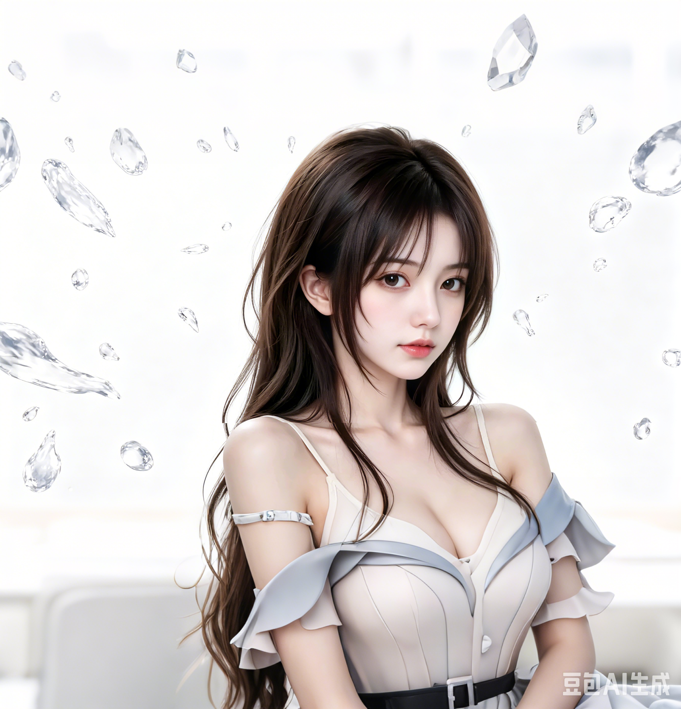
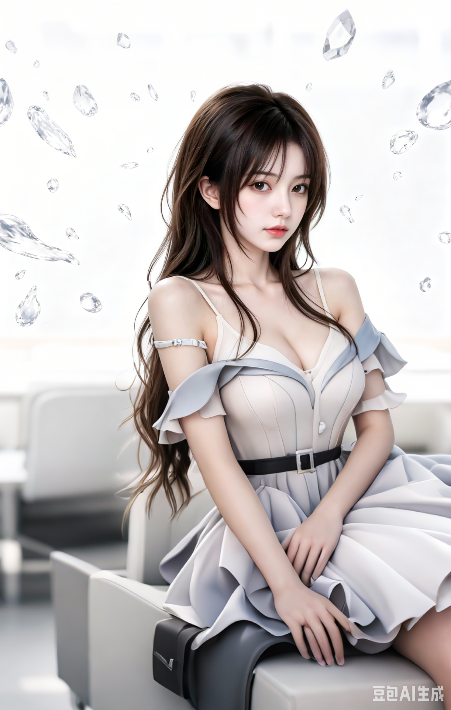
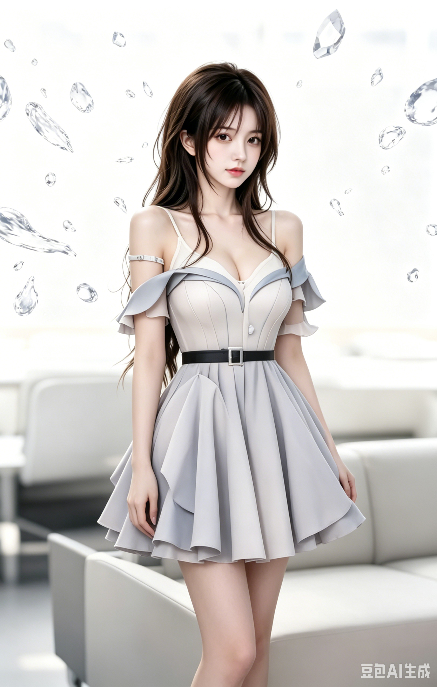
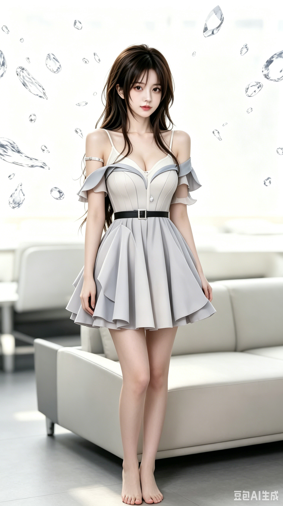
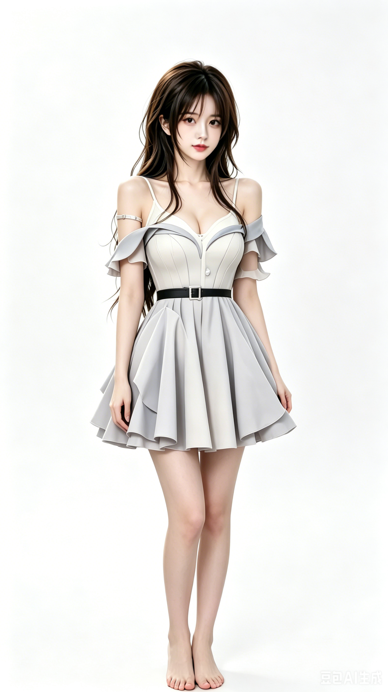
Интерактивная походка (walk.html)
Управление ←→ или AD.
original/character/walk.html — источник walk-video.mp4.Цикл ходьбы walk1–9
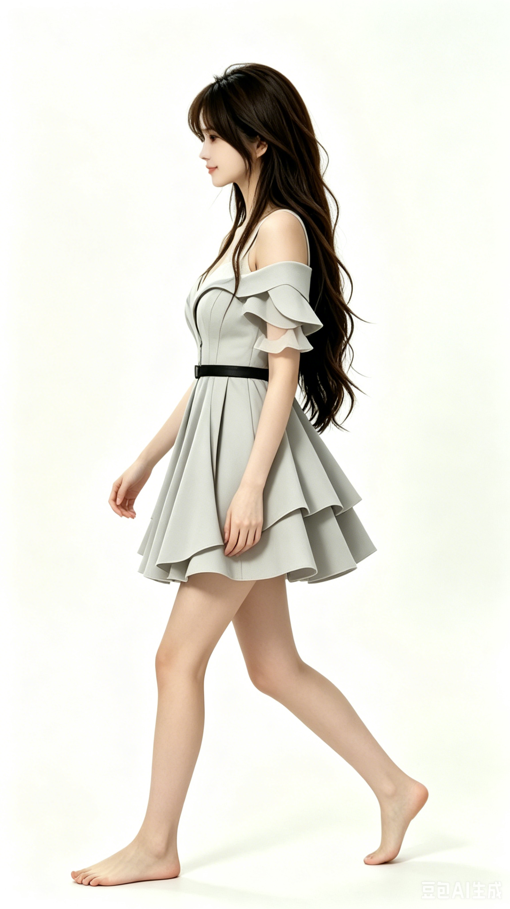
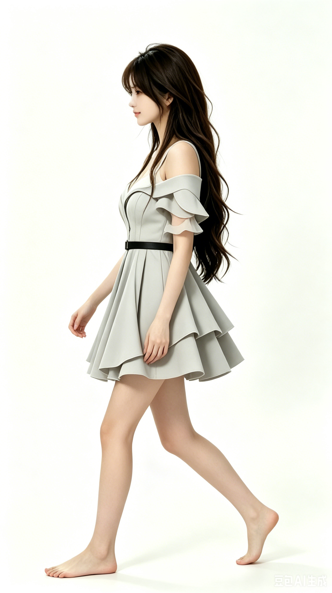
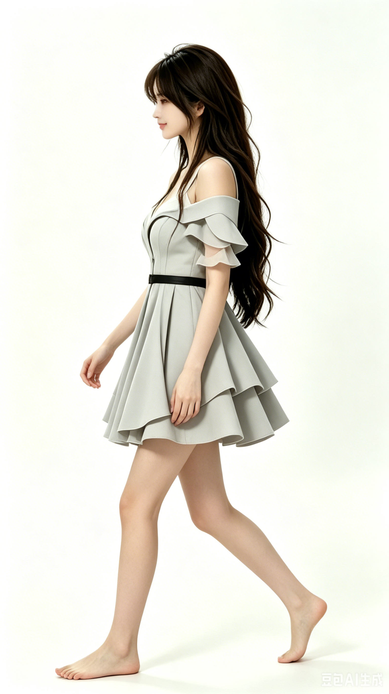
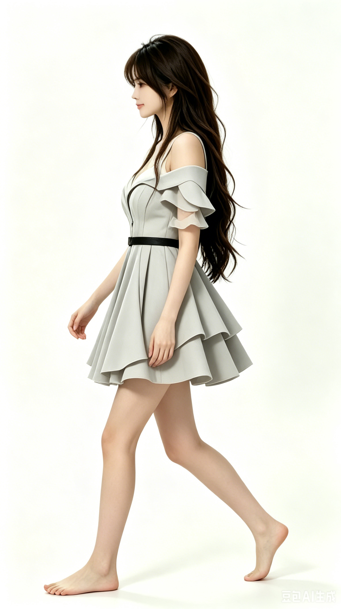
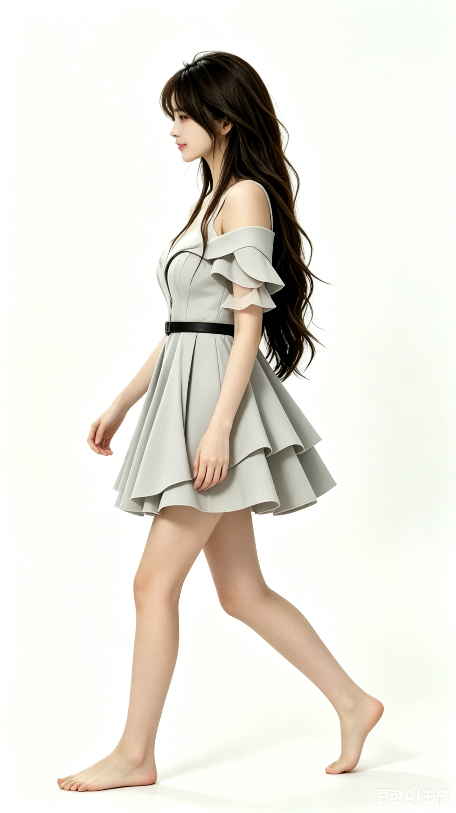
Клипы MP4
turn_around-v.mp4walk-video.mp4character-video1.mp4Генеративные опоры
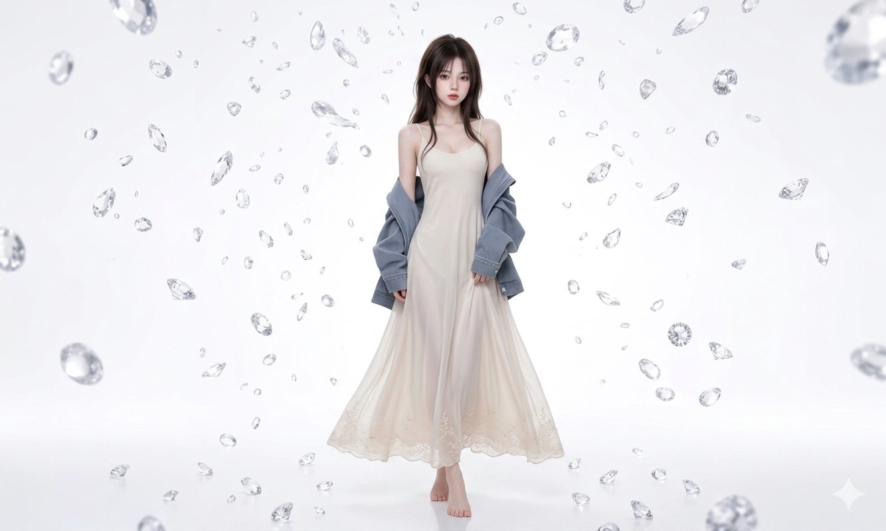
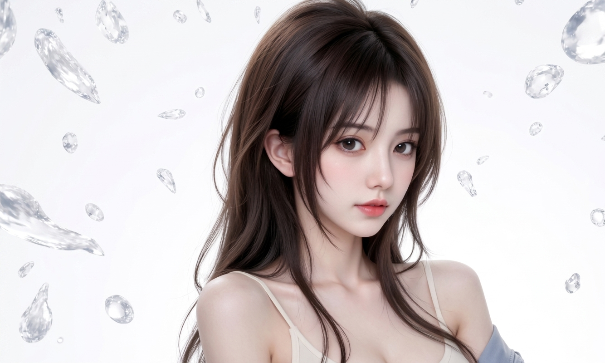
Прочие файлы
В той же папке: turn_around3.png, character-video2/3, PNG «生成图片» и др.